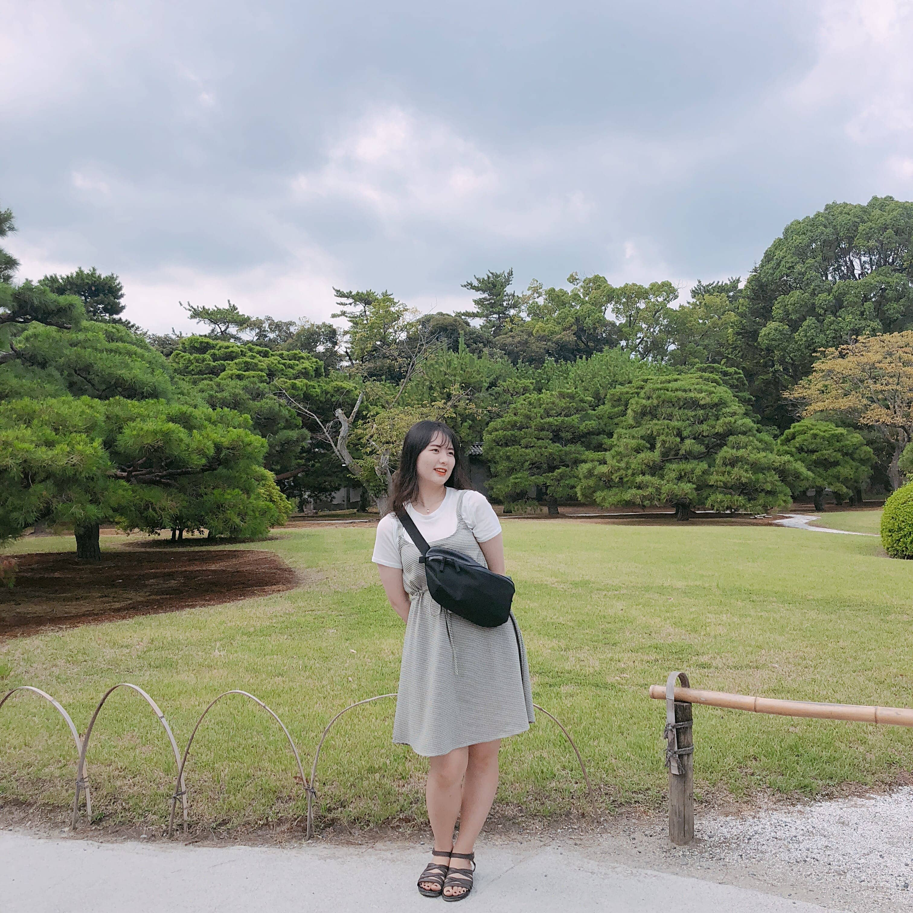
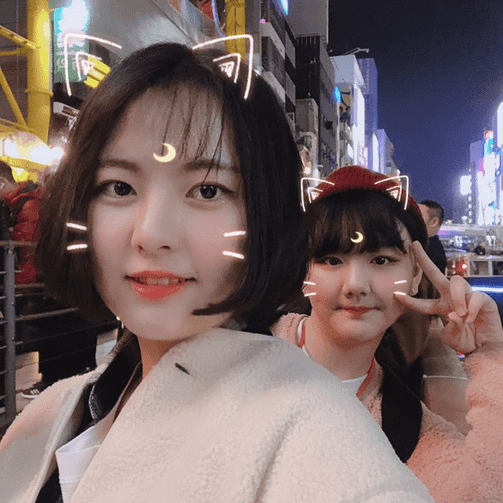
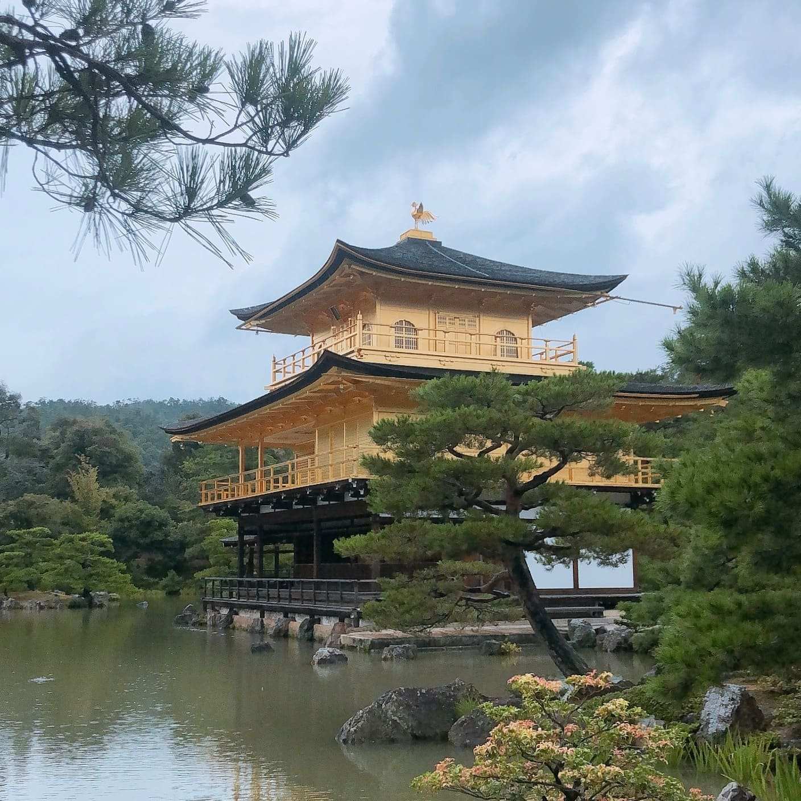
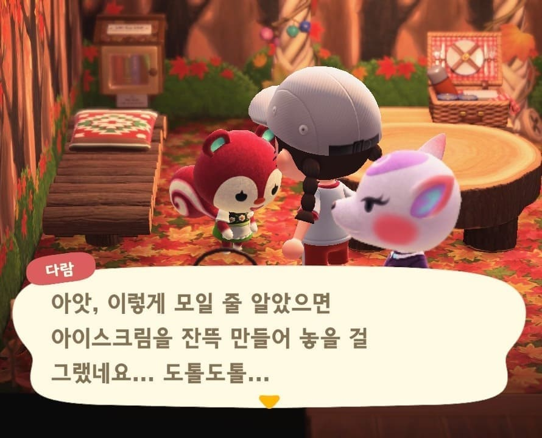
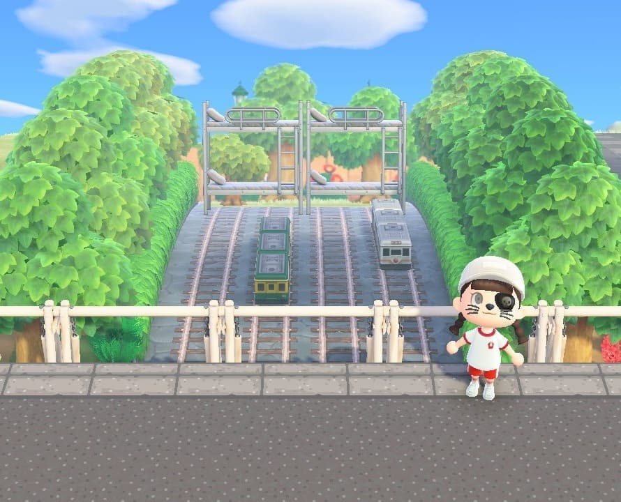
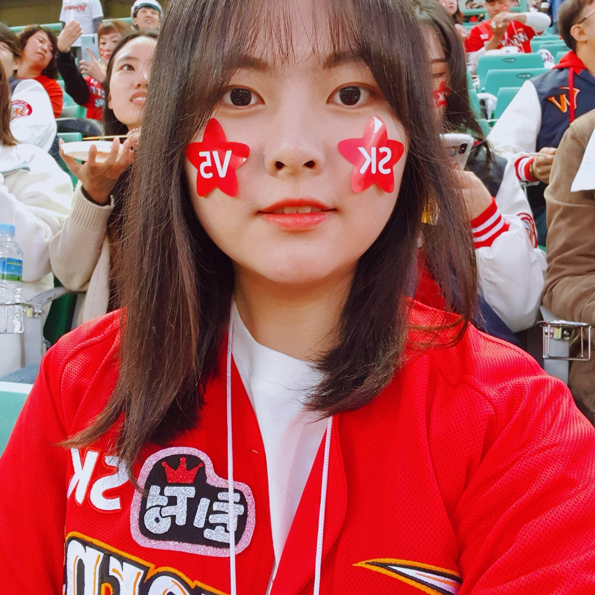
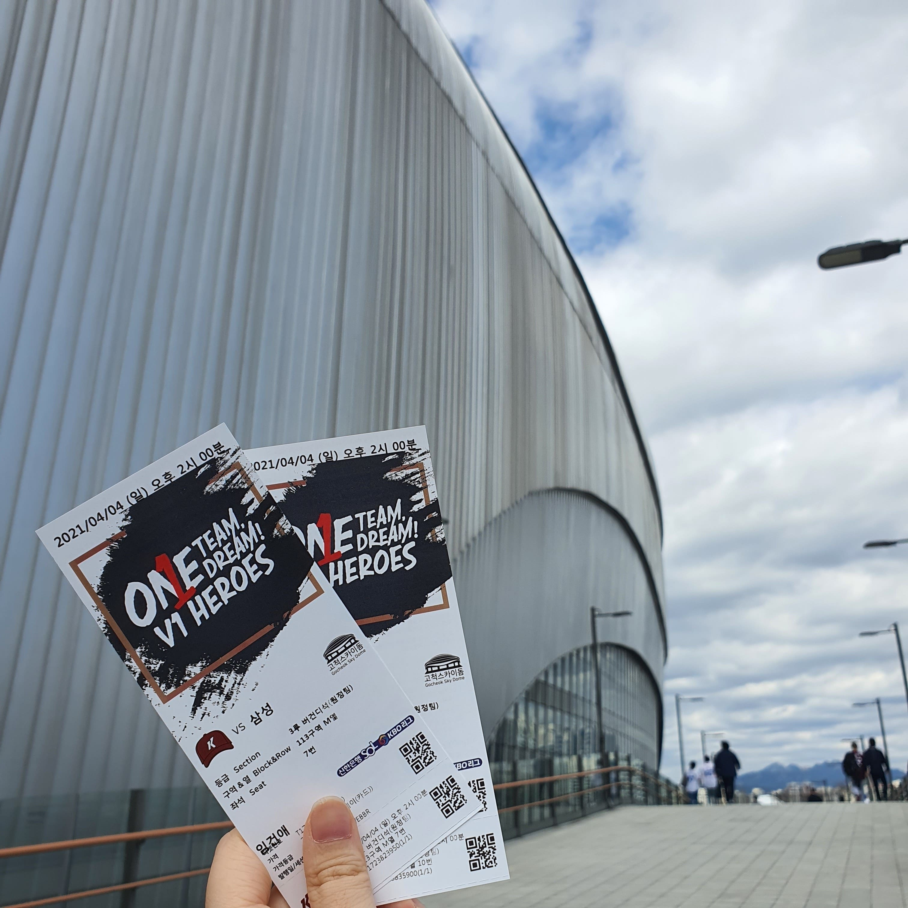

Geonae's Work Space
☞
prologue
/
favorite
/
-list
◎Travel Diary◎

[첫 자유여행, 교토]

[두 번째, 오사카에서]
↑Click!↑
[세 번째, 친구와 베이징]

[네 번째, 혼자서는 다시 첫 번째 교토]
◎Game Life◎


[모여봐요 동물의숲에서]
◎Enjoy Baseball◎

[2019년, 친구따라 sk가다]

[2021년 삼성의 개막식 경기를 보러간 날]
☞내가 응원하는 삼성의 현재 순위는!?